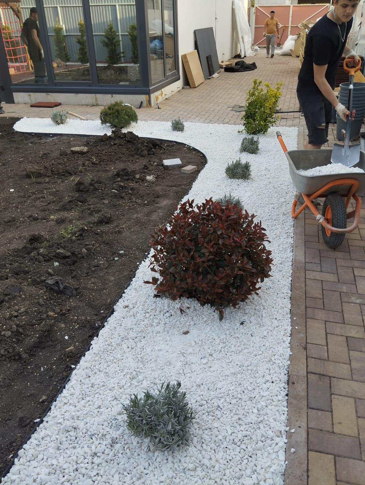
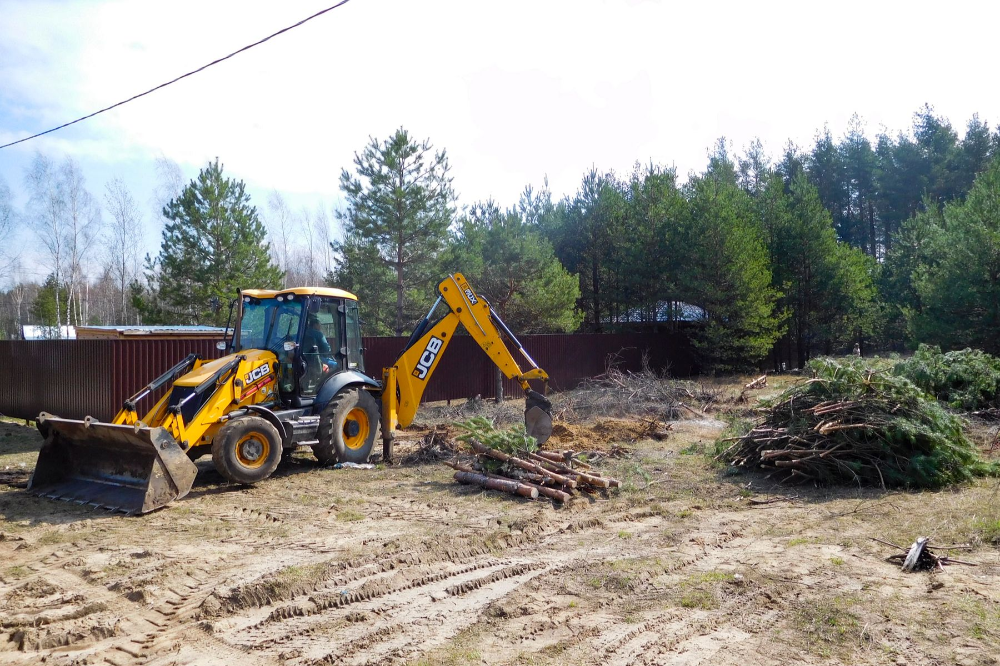
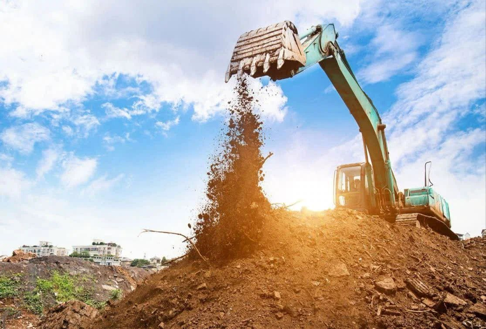
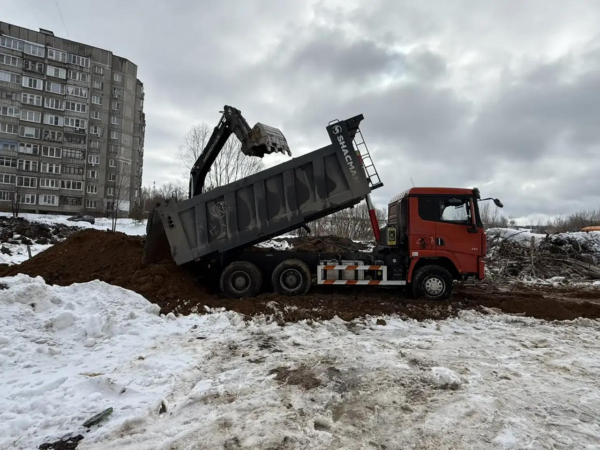
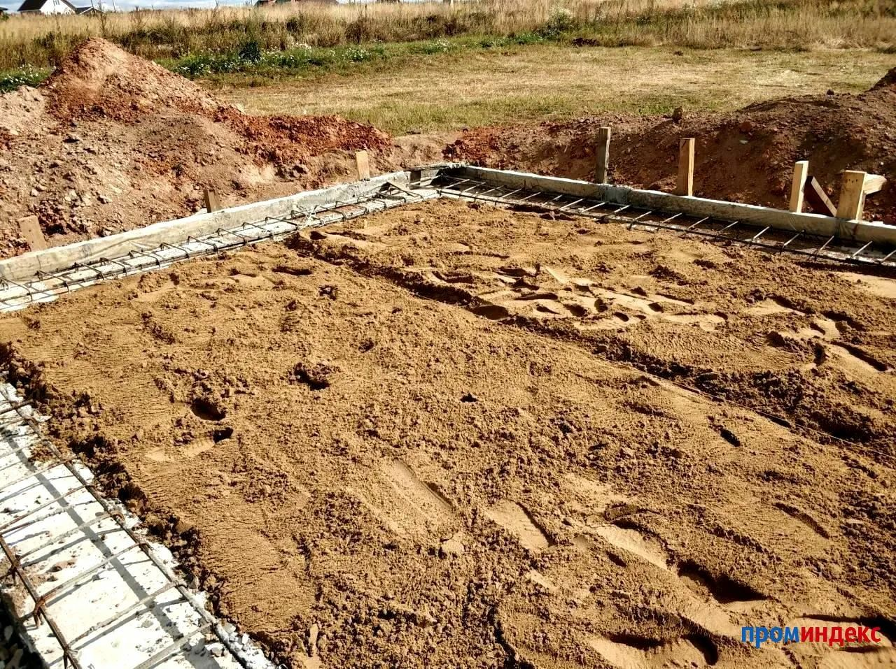
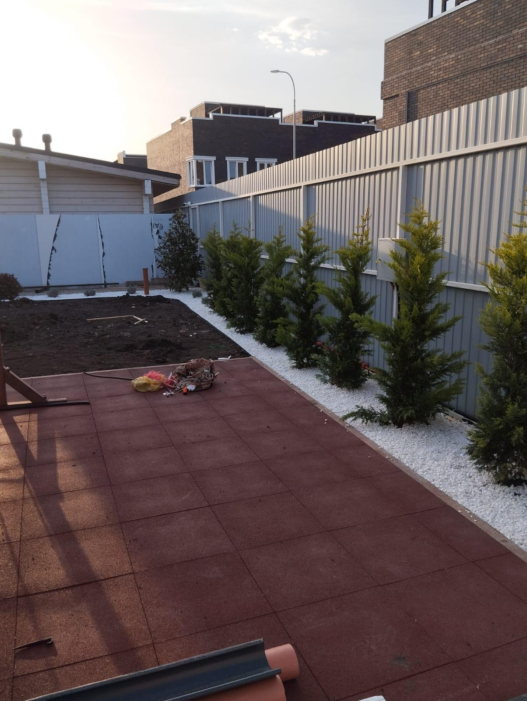

Благоустройство участков и частных домов
Планировка территории, организация дорожек, площадок, зон отдыха и общей структуры участка.



ООО «Эстетик Хаус» • Казань
Выполняем благоустройство территории в Казани: земляные работы, вывоз грунта и мусора, подготовку оснований, асфальтирование, укладку плитки и брусчатки, озеленение, монтаж площадок и ремонт прилегающих зон. Один подрядчик ведет объект от тяжелых этапов до чистого финального результата.
Кратко о компании
Компания работает с частными и коммерческими объектами: участками, дворами, входными группами, зонами отдыха, спортивными и детскими площадками.
В одном контуре выполняются земляные работы, вывоз, устройство оснований, укладка покрытий, озеленение, ремонт фасадов, крыш, пола и стен, а также монтаж игрового и спортивного оборудования.
Благоустройство в Казани
Берем на себя комплекс работ по участку или двору: расчистку территории, земляные работы, вывоз грунта, устройство оснований, укладку тротуарной плитки и брусчатки, асфальтирование, озеленение, монтаж детских и спортивных площадок, а также ремонт прилегающих зон.
Работаем с частными и коммерческими объектами в Казани: участками, дворами, входными группами, зонами отдыха, парковочными и пешеходными зонами, детскими и спортивными площадками. Важно, что все этапы координируются в одной команде, без передачи объекта между разными подрядчиками.
Когда благоустройство, покрытия, озеленение и вывоз выполняет один исполнитель, проще контролировать сроки, качество основания, последовательность работ и итоговый внешний вид объекта. Такой формат особенно удобен, если нужен понятный процесс и аккуратный результат под ключ.
Услуги
Планировка территории, организация дорожек, площадок, зон отдыха и общей структуры участка.
Посадки, отсыпка, аккуратная сборка ландшафтной композиции и оформление прилегающих зон.
Подготовка основания, устройство покрытий для дворов, проходов, парковочных и функциональных зон.
Ремонт фасадов, крыш, пола и стен на объектах, где нужно привести территорию и конструкции к единому виду.
Работы по благоустройству водных зон как части общего сценария участка или двора.
Расчистка площадки, погрузка и вывоз после демонтажа, копки и тяжелых подготовительных этапов.
Подготовка основания, укладка покрытия и установка игрового или спортивного оборудования.
Процесс → результат
Освобождаем площадку под дальнейшие работы, убираем лишний грунт, мусор и мешающие элементы.

Копка, планировка, разработка и формирование рельефа под будущие покрытия, площадки и посадочные зоны.

Организуем погрузку и вывоз после тяжелых этапов, чтобы объект двигался дальше без хаоса на площадке.

Готовим базу под плитку, брусчатку, асфальт, резиновое покрытие, оборудование и декоративные зоны.

Собираем рабочие и рекреационные зоны: асфальт, плитку, площадки, покрытия, игровые и спортивные элементы.

Добавляем растения, отсыпку и чистовую геометрию участка, чтобы пространство выглядело завершенным.

На выходе объект собран целиком: чистая территория, рабочие покрытия, озеленение и аккуратный визуальный итог.

Наши работы
Почему выбирают нас
Подряд выстроен так, чтобы тяжелые, промежуточные и финишные этапы не конфликтовали между собой.
Здесь использованы не стоковые изображения, а фотографии выполненных объектов и рабочих этапов.
От расчистки, копки и вывоза до покрытий, площадок, ремонта и озеленения.
Можно собрать в одном контуре двор, участок, площадку, входную зону или прилегающую территорию.
После техники и тяжелых работ объект доводится до чистого, читаемого и собранного итогового состояния.
Этапы работы
Вопросы и ответы
Выполняем благоустройство территории под ключ: расчистку участка, земляные работы, вывоз грунта и мусора, подготовку основания, укладку тротуарной плитки и брусчатки, асфальтирование, озеленение, монтаж площадок и сопутствующий ремонт прилегающих зон.
Нет. Компания работает и с частными, и с коммерческими объектами: дворами, участками, входными группами, зонами отдыха, детскими и спортивными площадками, а также другими объектами благоустройства.
Да, можно заказать отдельный вид работ. Но чаще всего удобнее вести объект комплексно: так легче обеспечить правильную подготовку основания, согласовать этапы и получить аккуратный итог без переделок.
Да. Вывоз грунта, мусора и остатков после демонтажа или копки входит в перечень услуг и помогает быстро подготовить участок к следующим этапам благоустройства.
Отзывы
Понравилось, что объект вели последовательно: расчистили участок, вывезли лишний грунт, подготовили основание и довели всё до аккуратного результата без ощущения недоделанности.
Частный участокУдобно, когда одна команда закрывает не только благоустройство, но и тяжелые этапы. Не пришлось искать отдельно технику, вывоз и исполнителей на финишные работы.
Комплексное благоустройствоХорошо организован процесс: сначала подготовка, потом покрытия и монтаж, а в конце участок уже выглядит собранно и чисто. Такой порядок работ оказался самым удобным.
Территория частного домаОтдельный плюс за то, что после тяжелых работ площадка не осталась в черновом виде. Всё довели до нормального визуального результата, и это сильно чувствуется на итоговом объекте.
Площадка и прилегающая зонаПо ходу работ было понятно, на каком этапе находится объект. Без лишней суеты, с понятной последовательностью и без постоянной передачи задач между разными подрядчиками.
Коммерческий объектСделали не только покрытие и монтаж, но и довели территорию вокруг. За счёт этого итог выглядит не кусками, а как одно нормальное пространство.
Двор и функциональные зоныДля нас было важно, чтобы исполнитель понимал и подготовку, и финальную часть работ. В этом формате оказалось проще согласовывать сроки и результат по объекту.
Подряд под ключИтоговое впечатление хорошее: после техники, вывоза и основания территория действительно приведена в порядок, а не просто оставлена после основного объема.
Благоустройство территорииКонтакты и реквизиты
Диваев Дмитрий Раулевич